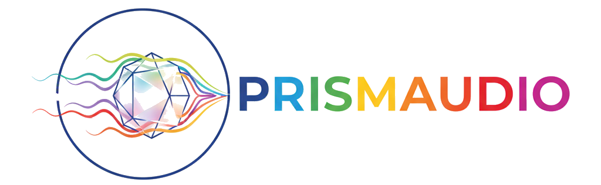
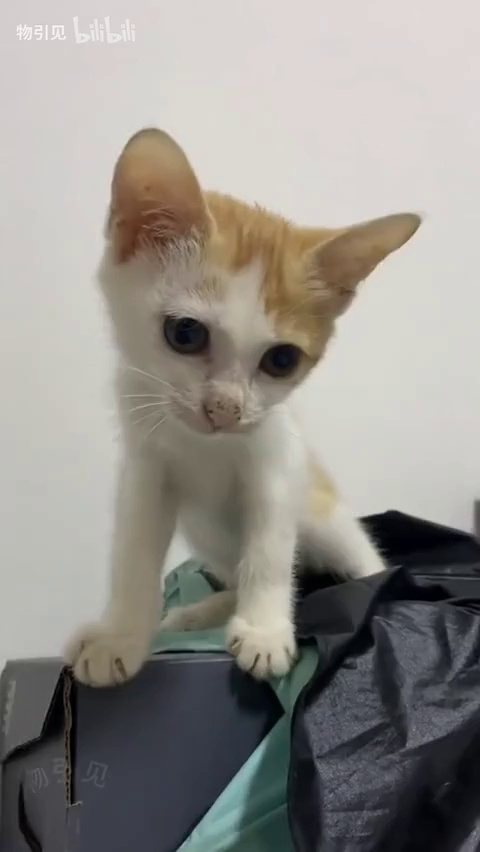
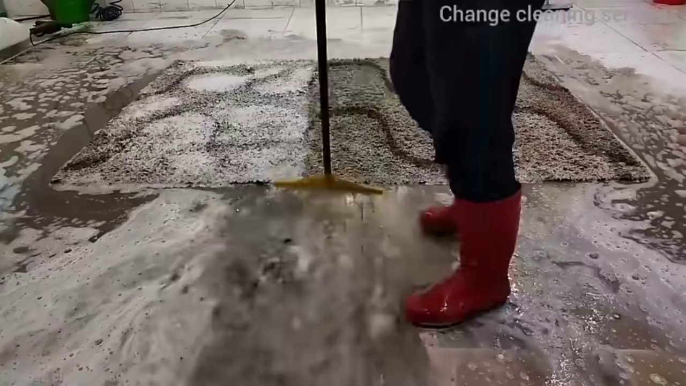
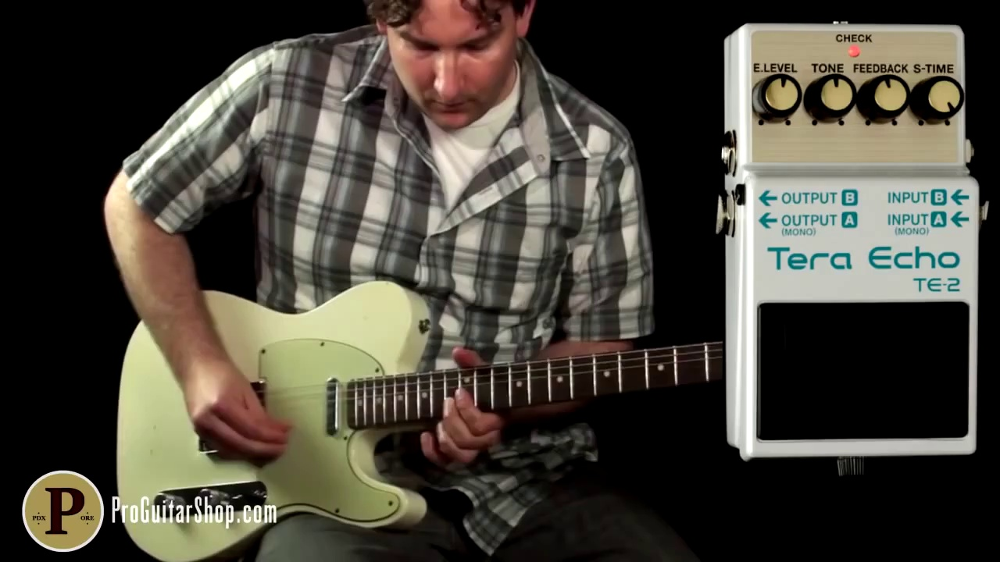
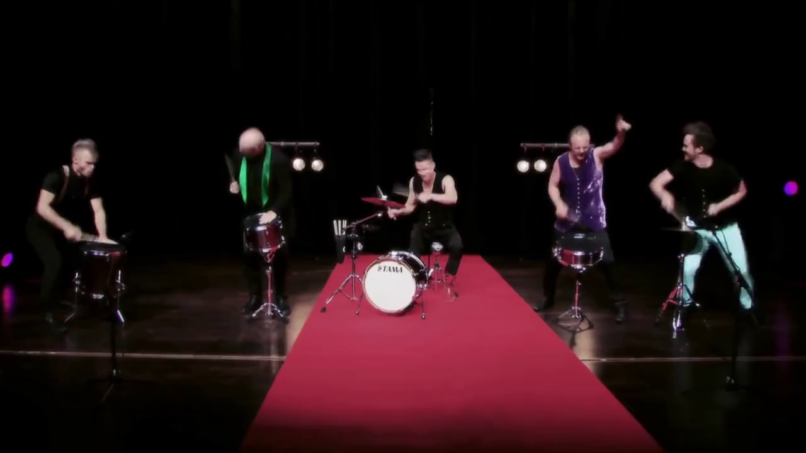
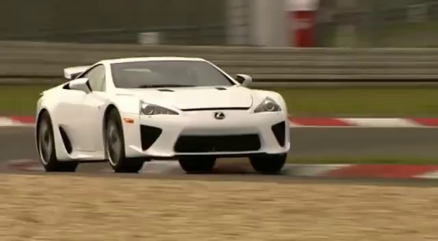
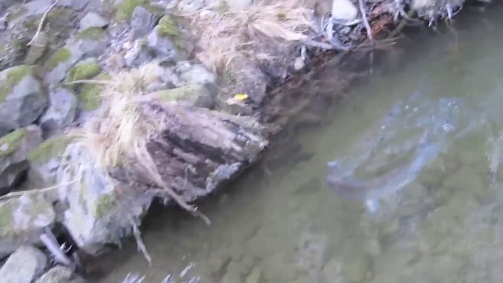
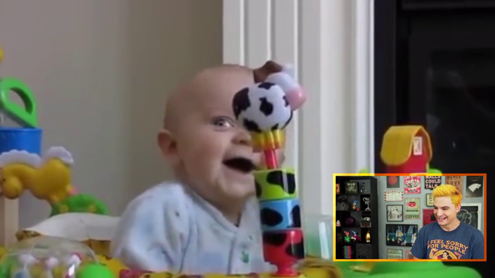
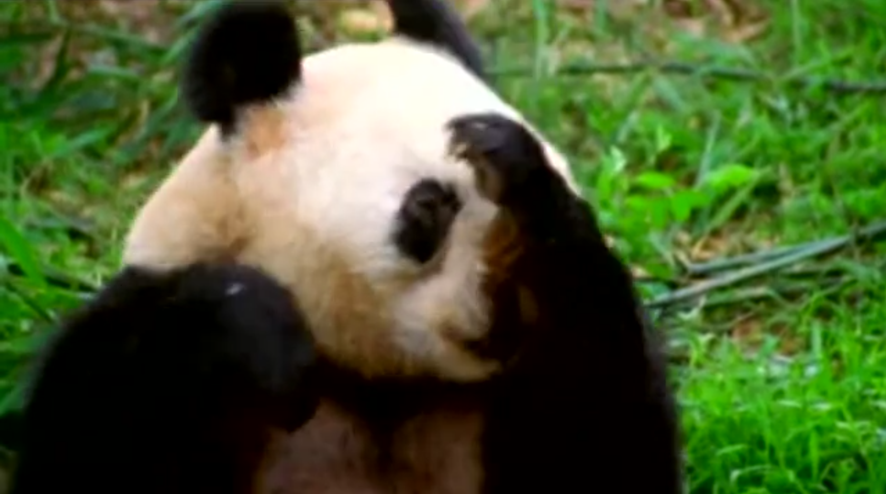

Decomposed Chain-of-Thoughts and Multi-Dimensional Rewards for Video-to-Audio Generation

Video-to-Audio (V2A) generation requires balancing four critical perceptual dimensions: semantic consistency, audio-visual temporal synchrony, aesthetic quality, and spatial accuracy; yet existing methods suffer from objective entanglement that conflates competing goals in single loss functions and lack human preference alignment. We introduce PrismAudio, the first framework to integrate Reinforcement Learning into V2A generation with specialized Chain-of-Thought (CoT) planning. Our approach decomposes monolithic reasoning into four specialized CoT modules (Semantic, Temporal, Aesthetic, and Spatial CoT), each paired with targeted reward functions. This CoT-reward correspondence enables multidimensional RL optimization that guides the model to jointly generate better reasoning across all perspectives, solving the objective entanglement problem while preserving interpretability. To make this optimization computationally practical, we propose Fast-GRPO, which employs hybrid ODE-SDE sampling that dramatically reduces the training overhead compared to existing GRPO implementations. We also introduce AudioCanvas, a rigorous benchmark that is more distributionally balanced and covers more realistically diverse and challenging scenarios than existing datasets, with 300 single-event classes and 501 multi-event samples. Experimental results demonstrate that PrismAudio achieves state-of-the-art performance across all four perceptual dimensions on both the in-domain VGGSound test set and out-of-domain AudioCanvas benchmark.

Overview of PrismAudio. Left panel: the progress of CoT training data construction using Gemini 2.5 Pro and then fine-tuning VideoLLaMA2 for decomposed CoT generation. Right panel: the Fast-GRPO multi-dimensional CoT-RL framework for post-training the Audio Foundation Model.
Click any card below to load the full high-fidelity comparison and Decomposed Chain-of-Thought analysis for that scene.

Chopping, Thudding

Machining, Tapping

Ice Cutting, Freezer Shutting

Unlocking, Pouring

Smoothing, Flipping

Plastic Pop Opening

Unrolling and Tearing Tape, Smoothing

Piercing, Rubbing

Exchanging Soap, Pouring
Click any card below to load the full high-fidelity comparison and Decomposed Chain-of-Thought analysis for that scene.

Trapped Cat

Accelerating, Revving, Vroom

Field Recording

Playing Double Bass

Baby Laughter

Firing Machine Gun

Carpet Cleaning
Rail Transport

Neigh, Whinny
Click any card below to load the full high-fidelity comparison and Decomposed Chain-of-Thought analysis for that scene.

Baltimore Oriole Calling

Playing Electric Guitar

Playing Drum Kit

Playing Badminton

Car Passing by

Stream Burbling

People Giggling

Panda Sneezing
People Laughing
| Method | Params | Semantic | Temporal | Aesthetic Quality | Spatial Accuracy | Distribution | Subjective | Time (s) | ||||||
|---|---|---|---|---|---|---|---|---|---|---|---|---|---|---|
| CLAP↑ | DeSync↓ | PQ↑ | PC↓ | CE↑ | CU↑ | GCC↓ | CRW↓ | FD↓ | KL↓ | MOS-Q↑ | MOS-C↑ | |||
| GT | - | 0.46 | 0.55 | 6.30 | 3.85 | 4.40 | 5.65 | - | - | - | - | 4.58±0.18 | 4.65±0.15 | - |
| Frieren† | 159M | 0.32 | 0.85 | 5.90 | 3.50 | 3.57 | 5.35 | - | - | 1.34 | 2.86 | 3.45±0.75 | 3.51±0.80 | - |
| V2A-Mapper† | 229M | 0.31 | 1.23 | 6.26 | 3.54 | 4.12 | 5.63 | - | - | 0.90 | 2.49 | 3.38±0.82 | 3.44±0.88 | - |
| AudioX | 1.1B | 0.41 | 1.24 | 5.94 | 3.43 | 3.86 | 5.44 | 7.22 | 19.25 | 1.51 | 1.80 | 3.61±0.75 | 3.65±0.72 | 7.52 |
| HunyuanVideo-Foley | 5.31B | 0.42 | 0.55 | 5.85 | 3.26 | 3.92 | 5.26 | - | - | 2.26 | 1.73 | 3.88±0.55 | 3.96±0.52 | 10.63 |
| MMAudio | 1.03B | 0.40 | 0.46 | 5.94 | 3.51 | 3.88 | 5.28 | - | - | 2.17 | 1.32 | 3.95±0.51 | 4.03±0.58 | 1.30 |
| ThinkSound | 1.3B | 0.43 | 0.55 | 6.15 | 3.53 | 3.95 | 5.48 | 4.65 | 13.47 | 1.17 | 1.35 | 4.05±0.55 | 4.18±0.51 | 1.07 |
| PrismAudio w/o CoT-RL | 518M | 0.42 | 0.51 | 6.17 | 3.32 | 3.94 | 5.48 | 4.06 | 10.29 | 1.14 | 1.43 | 4.02±0.48 | 4.11±0.42 | 0.63 |
| PrismAudio (Ours) | 518M | 0.47 | 0.41 | 6.38 | 3.24 | 4.29 | 5.68 | 3.77 | 7.72 | 1.08 | 1.23 | 4.21±0.35 | 4.22±0.29 | 0.63 |
| Method | Semantic | Temporal | Aesthetic Quality | Spatial Accuracy | Distribution | Subjective | ||||||
|---|---|---|---|---|---|---|---|---|---|---|---|---|
| CLAP↑ | DeSync↓ | PQ↑ | PC↓ | CE↑ | CU↑ | GCC↓ | CRW↓ | FD↓ | KL↓ | MOS-Q↑ | MOS-C↑ | |
| GT | 0.48 | 0.40 | 6.47 | 3.16 | 4.02 | 5.99 | - | - | - | - | 4.65±0.23 | 4.72±0.20 |
| HunyuanVideo-Foley | 0.44 | 0.47 | 6.43 | 3.25 | 4.04 | 5.88 | - | - | 2.04 | 2.07 | 3.75±0.52 | 3.71±0.58 |
| MMAudio | 0.46 | 0.43 | 6.30 | 3.23 | 3.97 | 5.77 | - | - | 3.59 | 1.87 | 3.88±0.45 | 3.87±0.41 |
| ThinkSound | 0.48 | 0.80 | 6.48 | 3.50 | 4.10 | 5.94 | 4.43 | 22.82 | 1.95 | 2.54 | 3.79±0.58 | 3.80±0.54 |
| PrismAudio w/o CoT-RL | 0.42 | 0.44 | 6.45 | 3.22 | 3.81 | 5.87 | 4.11 | 15.30 | 2.10 | 2.17 | 3.91±0.35 | 3.85±0.31 |
| PrismAudio (Ours) | 0.52 | 0.36 | 6.68 | 2.82 | 4.26 | 6.15 | 3.50 | 12.87 | 1.92 | 1.53 | 4.12±0.28 | 4.01±0.25 |
@misc{liu2025prismaudiodecomposedchainofthoughtsmultidimensional,
title={PrismAudio: Decomposed Chain-of-Thoughts and Multi-dimensional Rewards for Video-to-Audio Generation},
author={Huadai Liu and Kaicheng Luo and Wen Wang and Qian Chen and Peiwen Sun and Rongjie Huang and Xiangang Li and Jieping Ye and Wei Xue},
year={2025},
eprint={2511.18833},
archivePrefix={arXiv},
primaryClass={cs.SD},
url={https://arxiv.org/abs/2511.18833},
}